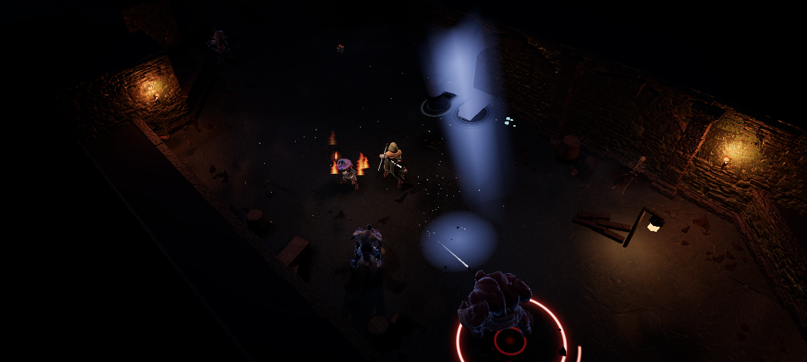
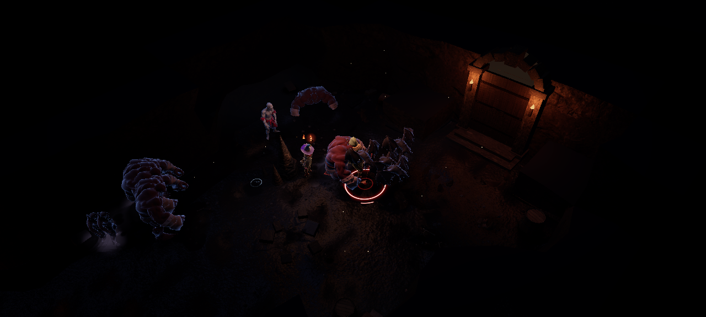

As catacumbas continuam escuras, mas agora a luz delas tem lugar. Cada tocha clareia a alvenaria em volta e cada personagem ganha uma borda de luz que o separa do breu.
Tochas que iluminam
Antes, só as luzes mais próximas do herói clareavam o cenário, e as outras eram uma chama sobre o preto. Agora até 12 tochas, velas e braseiros iluminam o chão, as paredes e as pilastras ao redor, e as paredes desenham o contorno das salas à distância. O número de luzes acompanha a qualidade gráfica: 12 no alto, 8 no médio e 4 no baixo.

As paredes acendem em volta de cada tocha.
Luz de contorno
Uma borda fina de luz desenha a silhueta de cada personagem, sem clarear a cena. É quente no Menestrel e na Lia, fria nos monstros comuns, dourada nos elites e cor de brasa nos chefes. Na luta, dá para ler quem é quem num relance.

Os monstros se destacam do chão escuro.
Chão com história
Acabaram as bolinhas pretas espalhadas pelo chão. As manchas de sujeira, umidade e sangue ganharam oito formas orgânicas: sujeira irregular, umidade com borda seca, escorrido, respingo, poça, rachaduras e salpicado. As sombras de pedrinhas, ossos e entulho agora seguem o tamanho real da peça. E perto das chamas, mariposas rondam a luz.